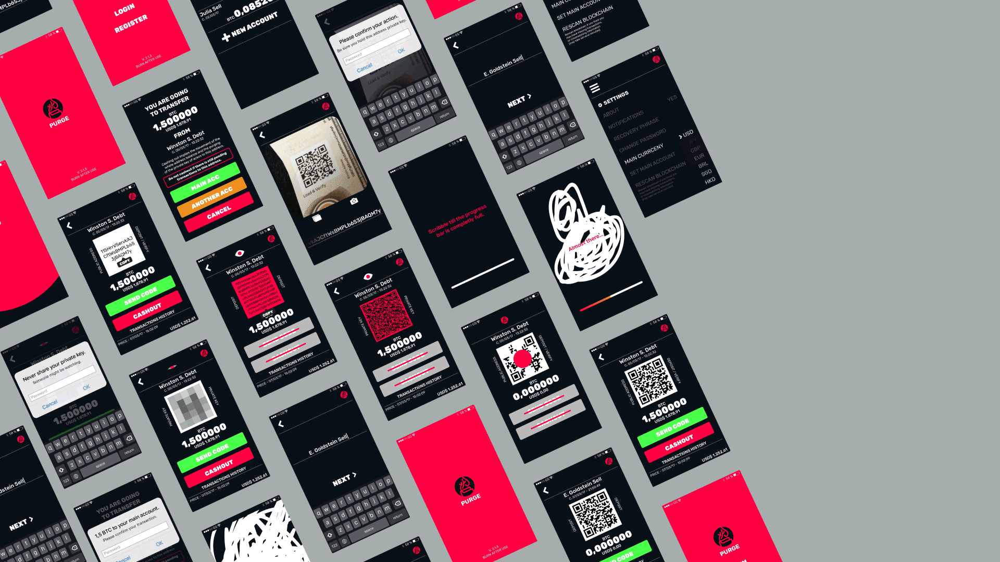
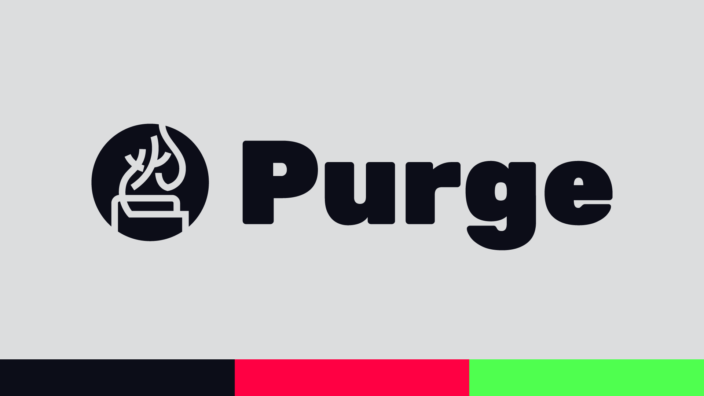
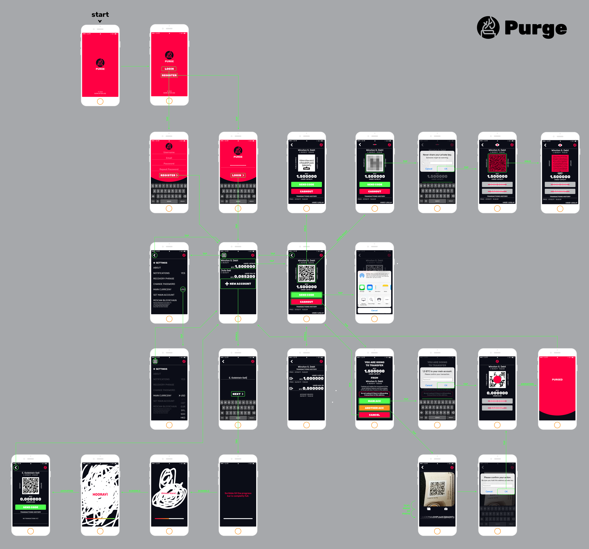

Purge App
— Disposable Bitcoin Wallet
⭢ Abstract
Purge was thought out as a digital bitcoin wallet with similar features from paper bitcoin wallets. The main concept revolves around the ability to quickly dispose an address and the management of various different unrelated addresses, without compromising your privacy and giving the user total control of their information and private keys.
⭢ Made With
Sketch, Illustrator, Photoshop.
⭢ Keywords
Crypocurrency, Bitcoin, Digital Wallet.
⭢ Introduction
This app was thought as a way to guarantee a bigger security for Bitcoin users that wanted to have total control of their assets. Since Bitcoin’s transaction informations are publicly stored in a ledger called Blockchain, the unintended reuse of addresses can lead to a security flaw, where it enables possible attacks where, through transaction patterns, another person can recovering Bitcoin private keys using weak signatures from the blockchain.
Most modern bitcoin and other cryptocurrencies wallets already manage your assets through multiple addresses, making sure there is no unsafe reuse. This app proposal stands on a different take, where the user has total control of their addresses and keys, providing infinite incoming transactions, and only one outgoing transaction in order to prevent this vulnerability.
⭢ Concept
Based on the idea of disposing an address after a single outgoing transaction, the name came to be as Purge, as if a letter was burned after the receiver read it. The logo is the japanese kanji 火 for fire, shaped as a flame, coming out of a wallet.
The entire color scheme of the app was based around three main colors, a pinkish red, a bluish black and neon green.


Click here to download the full-size image.
{kind=link}
⭢ Implementation
The app approaches a different implementation seen on existing cryptocurrency apps, trying to break the visual pattern seen in related apps with a ludification approach, simplifying navigation and implementing natural interactions throughout the app
The creation of a new address demands that the user scribbles through the screen in order to generate a random address and its private key. This method guarantees a truly random secure seed.
Whenever the user goes through information that is not meant to be shared, the entire app changes. When visualizing the private key, an open eye icon on top of the screen indicates vulnerability, and all actions that would work with a public address are blocked, thus preventing misclicks and mistakes with vital information.
⭢ Results
The finished app is a simple yet complex crypto wallet that guarantees security and privacy. Each account can have its unique name and are able to verify all incoming transactions. Through the playful nature of the app, mundane tasks like generating a news address, sending information to receive assets or even cashing out became less tedious, but not less capable.